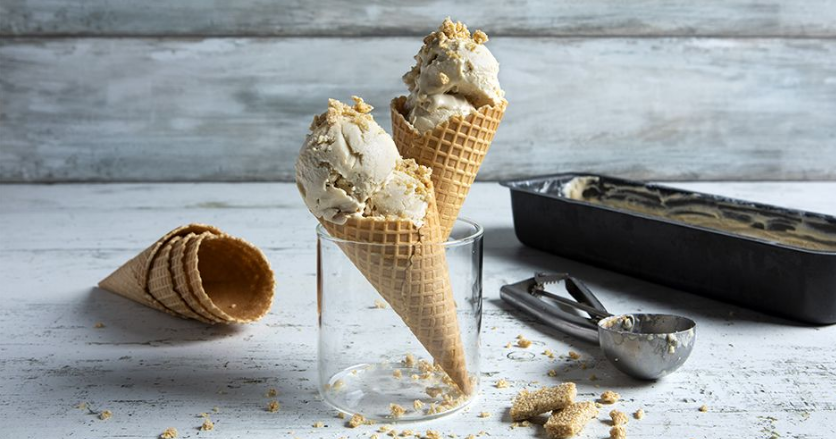

Tahini ice cream

Description
Use your tahini in an original way, and prepare the most delicious homemade ice cream! You just need a few simple ingredients for this refreshing dessert recipe!
Ingredients
- 200 g whole milk, fresh
- 400 g tahini
- 500 g heavy cream 35%
- 100 g honey
- lemon zest, from 1 lemon
To serve
- ice cream cones
- honey sesame bars, finely chopped
Steps
Let's get cooking...
- Put all the ingredients into a bowl and whisk them very well for 2-3 minutes.
- Pour the mixture into an ice cream maker and beat it in batches, until it has the smooth and soft texture of ice cream. (The time needed depends on your ice cream maker.)
- Transfer the mixture to a 35x10 cm loaf tin, cover with plastic wrap, and freeze it for at least 6-8 hours, until it is well thickened.
- If you do not have an ice cream maker, take the mixture out of the freezer every 2 hours, beat it with a hand mixer, and place it again in the freezer (if you want, you can stir the ice cream with a spoon instead of a mixer, but it will not be as fluffy). You have to do that until the ice cream freezes well and has the desired consistency (the time needed depends on your freezer’s intensity).
- Serve in ice cream cones and sprinkle with finely chopped pasteli.
home